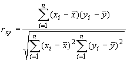

Эмпирический коэффициент корреляции (или коэффициентом корреляции Пирсона) определяется следующим образом:

Коэффициент корреляции — безразмерное число, лежащее в пределах от -1 до +1. При независимом варьировании признаков, когда связь между ними полностью отсутствует, r =0. Чем сильнее связаны признаки, тем выше значение коэффициента корреляции. При положительной или прямой связи, когда большим значениям одного признака соответствуют большие же значения другого, коэффициент корреляции имеет положительный знак и находится в пределах от 0 до +1. При отрицательной или обратной связи, когда большим значениям одного признака соответствуют меньшие значения другого, коэффициент корреляции сопровождается отрицательным знаком и находится в пределах от 0 до -1.